Demon
英語版 CrawlWiki の記事「Demon」(0.34 向け、2026-09-15 版)の翻訳です。原文の著者は編集履歴をご覧ください。
悪魔は、地獄、パンデモニウム、アビスといった地獄の世界から来た不浄なモンスターだ。強さは赤インプのような小うるさいだけの雑魚から、強大な上位デーモンまでさまざまで、能力も多種多様だ。召喚で呼び出されるほか、迷宮の深い階、とりわけ先に挙げた地獄の分岐に出現する。
悪魔はすべて邪悪とみなされ、神罰のブランドが付いた武器や聖なる御言葉から追加ダメージを受ける。多くの神は悪魔を倒すと信仰心をくれる。神によっては、信者に悪魔のしもべを授けることもある。
Crawl の ASCII 版では、等級のある悪魔は等級を表す数字(1〜5)で表示される。それより強い悪魔はアンパサンド(&)で表される。
目次
悪魔の一覧
5級悪魔
5級悪魔は悪魔のなかでもっとも弱い等級だ。迷宮の浅い階でよく見かけ、強いモンスターにまとめて召喚されることも多い。てこずるのは駆け出しの冒険者くらいだろう。
- 5
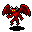
赤インプ- しょっちゅう瞬間移動し、傷もすぐに治る鬱陶しい小物。追い詰めて仕留めるのはかなり面倒だが、それを除けばほぼ無害だ。 - 5
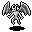
白インプ- 冷気の投射と冷気属性の近接攻撃を持つ、寒々しい小悪魔。 - 5
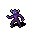
影のインプ- 苦痛を唱える、下っ端の拷問役の悪魔。 - 5
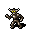
鉄インプ- 金属でできたインプ。動きは遅いが、ほかのインプよりHPが多く、近接攻撃も強い。 - 5
 ウフェツバス- 素早く、攻撃しながらあなたの背後に回り込んでくる。3級のヱノクシヌルにまとめて召喚される。
ウフェツバス- 素早く、攻撃しながらあなたの背後に回り込んでくる。3級のヱノクシヌルにまとめて召喚される。 - 5
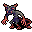
ドルーデ- 小さくて素早い悪魔で、ダメージを与えると破滅を負わせてくる。 - 5
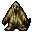
レムレース- 次元をまたにかける奴隷商人に縛られ、こき使われている呪われた魂。主人を倒せば解放される。 - 5
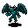
空色インプ- インプの召喚で呼び出されるインプ。スピアを持っていて、その質は呪文の威力で決まる。


4級悪魔
4級悪魔は5級悪魔より強いが、それでもゲーム中ではかなり弱い部類の悪魔だ。遠くからダメージを与えてくるものはいないが、別の特殊能力を持つものが何種かいる。マクレブの祈祷「地獄の従者」で、味方として授けられることがある。
- 4
 紅の悪魔- トライデントに逆棘をまとわせた、空を飛ぶ悪魔。冷気に弱い。
紅の悪魔- トライデントに逆棘をまとわせた、空を飛ぶ悪魔。冷気に弱い。 - 4
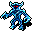
氷の悪魔- 呪文は使わないが、強力な冷気の攻撃を持つ。火炎は苦手。 - 4
 錆の悪魔- 金属でできた悪魔で、いくつもの耐性と腐食性の攻撃を持つ。
錆の悪魔- 金属でできた悪魔で、いくつもの耐性と腐食性の攻撃を持つ。 - 4
 ヘルウィング- 骨ばかりの悪魔。間にいるクリーチャーを飛び越え、標的の背後から襲いかかる。
ヘルウィング- 骨ばかりの悪魔。間にいるクリーチャーを飛び越え、標的の背後から襲いかかる。 - 4
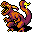
オレンジデーモン- 毒針の付いた尻尾でリーチ攻撃をしかけ、虚弱にしてくる悪魔。 - 4
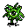
混沌の落とし子- 絶えず姿を変える生き物。動きが速く、混沌のブランド付きの近接攻撃をしてくる。倒すと崩れて生の混沌の雲になる。


3級悪魔
3級悪魔は中くらいの強さの悪魔で、能力は種類ごとにまちまちだ。ほかより明らかに危険なものもいる。
- 3
 ネクオゼク- 一時的な変異を起こしたり、魔力を吸い取ったりしてくる。
ネクオゼク- 一時的な変異を起こしたり、魔力を吸い取ったりしてくる。 - 3
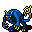
シクスファルハイ- 目にも留まらぬ速さで一気に動く、電気のインプ。わりと弱いが、電撃への耐性がないとかなり痛い。 - 3
 噴煙のデーモン- 生きた煙でできた悪魔。火葬の矢、蒸気の爆裂球、打擲の一撃を使うので、離れていても危ない。
噴煙のデーモン- 生きた煙でできた悪魔。火葬の矢、蒸気の爆裂球、打擲の一撃を使うので、離れていても危ない。 - 3
 魂を貪るもの- 近くの敵に生命の簒奪を使ってくる、しぶとい悪魔。
魂を貪るもの- 近くの敵に生命の簒奪を使ってくる、しぶとい悪魔。 - 3
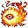
サンデーモン- 素早い炎の悪魔。炎の攻撃は強力だが、冷気に弱い。 - 3
 ヱノクシヌル- ウフェツバスを召喚するほか、弱めの鉄塊の矢も撃ってくる。
ヱノクシヌル- ウフェツバスを召喚するほか、弱めの鉄塊の矢も撃ってくる。


2級悪魔
2級悪魔は多彩な能力を持つ手ごわい相手で、通常の悪魔のなかでは2番目に強い等級にあたる。また、マクレブの信者は、祈祷スキルが十分に高ければ「地獄の従者」でこのうち何種かを呼び出せる。
- 2
 バルログ- 巨大で素早い悪魔。ブランド付きの悪魔の鞭を振るい、強力な炎の魔法を唱え、敵に打擲の一撃を浴びせる。
バルログ- 巨大で素早い悪魔。ブランド付きの悪魔の鞭を振るい、強力な炎の魔法を唱え、敵に打擲の一撃を浴びせる。 - 2
 氷河の悪魔- 風と氷の魔術の強力な呪文を唱える悪魔。
氷河の悪魔- 風と氷の魔術の強力な呪文を唱える悪魔。 - 2
 混沌の悪鬼- 破滅の矢、ガラス化、減速を唱え、こちらを弱らせてくる危険な悪魔。壁を掘り進むこともできる。
混沌の悪鬼- 破滅の矢、ガラス化、減速を唱え、こちらを弱らせてくる危険な悪魔。壁を掘り進むこともできる。 - 2
 緑の殲滅者- ありとあらゆる危険な毒で攻めてくる悪魔。
緑の殲滅者- ありとあらゆる危険な毒で攻めてくる悪魔。 - 2
 罪の獣- 近接戦の強い危険な悪魔で、敵を踏みつけて押しのけ、立ち位置を崩してくる。噛みつきには反魔法の効果がある。ゲリュオンの角笛で大群を呼び出せる。
罪の獣- 近接戦の強い危険な悪魔で、敵を踏みつけて押しのけ、立ち位置を崩してくる。噛みつきには反魔法の効果がある。ゲリュオンの角笛で大群を呼び出せる。 - 2
 ヘリオン- 狙った場所に直接撃ち込む天罰を浴びせかけるのが得意な悪魔。
ヘリオン- 狙った場所に直接撃ち込む天罰を浴びせかけるのが得意な悪魔。 - 2
 切り裂きの悪魔- いわゆる死神そのもの。ブランド付きの大鎌を振るい、近接攻撃で大きなダメージを与えてくる。
切り裂きの悪魔- いわゆる死神そのもの。ブランド付きの大鎌を振るい、近接攻撃で大きなダメージを与えてくる。 - 2
 シャドウデーモン- 召喚を使う悪魔で、あっという間に周りを影の怪物で埋め尽くす。
シャドウデーモン- 召喚を使う悪魔で、あっという間に周りを影の怪物で埋め尽くす。 - 2
 拷問の悪魔- 拷問を唱える素早い悪魔。
拷問の悪魔- 拷問を唱える素早い悪魔。 - 2
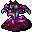
ジクジル- 悪性変異、衰弱、肉塊の矢を唱える、とても危険な悪魔。

1級悪魔
1級悪魔(上位デーモンとも呼ばれる)は、Dungeon Crawl でも指折りの危険な敵だ。1級悪魔はどれも透明なものが見え、魔神はどれも拷問を使う。1級悪魔を何体も相手にするのは、戦うどころか視界に入れるだけでもやめておいたほうがいい。暴君の印を持ち、祈祷スキルが十分に高いマクレブの信者だけが、このうち最初の4種を呼び出せる。
- 1
 硫黄の魔神- 拷問に加えて天罰を得意とする魔神。冷気に弱い。
硫黄の魔神- 拷問に加えて天罰を得意とする魔神。冷気に弱い。 - 1
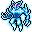
氷の魔神- 拷問と凍結の矢を使う魔神だが、いちばん怖いのは強烈な冷気をまとった近接攻撃だ。火に弱い。 - 1
 ツィツィミトル- 恐ろしい神格。さまざまな負のエネルギーの呪文で、生者にも不死者にもダメージを与えてくる。
ツィツィミトル- 恐ろしい神格。さまざまな負のエネルギーの呪文で、生者にも不死者にもダメージを与えてくる。 - 1
 地獄の番人- 非常に頑丈な悪魔の構築物。痛い棘を持ち、天罰と鉄塊の矢の両方を使う。
地獄の番人- 非常に頑丈な悪魔の構築物。痛い棘を持ち、天罰と鉄塊の矢の両方を使う。 - 1
 処刑の悪魔- 通常の2倍の速さで動き、ちょっとでも刺激されると加速を唱える。この速さで3回の近接攻撃を繰り出すので、軽装のキャラクターはずたずたにされかねない。
処刑の悪魔- 通常の2倍の速さで動き、ちょっとでも刺激されると加速を唱える。この速さで3回の近接攻撃を繰り出すので、軽装のキャラクターはずたずたにされかねない。

大悪魔
悪魔のなかでも最強の存在。どれもユニークモンスターで、たいていはボスのような立場で現れる。多くはいずれかのゾットのルーンの守護者を務めている。
- &
 パンデモニウムの君主- パンデモニウムの各地をそれぞれ治める強力な悪魔。能力も見た目も個体ごとに大きく異なる。
パンデモニウムの君主- パンデモニウムの各地をそれぞれ治める強力な悪魔。能力も見た目も個体ごとに大きく異なる。 - &
 ムノレグ- 輝きのルーンの守護者。ムノレグとその手下は何度もあなたに悪性変異をかけてくるうえ、ムノレグ自身は混沌のモンスターを大波のように召喚する。
ムノレグ- 輝きのルーンの守護者。ムノレグとその手下は何度もあなたに悪性変異をかけてくるうえ、ムノレグ自身は混沌のモンスターを大波のように召喚する。 - &
 ロム・ロボン- 魔法のルーンの守護者。ゲーム中でも屈指の強力な呪文を操り、魔法使いのモンスターの一団を率いている。
ロム・ロボン- 魔法のルーンの守護者。ゲーム中でも屈指の強力な呪文を操り、魔法使いのモンスターの一団を率いている。 - &
 セレボブ- 火のルーンの守護者。非常に強力な妖術で侵入者を吹き飛ばし、炎に縁のある強力な悪魔を召喚する。しかもセレボブの剣はあなたの火炎耐性を焼き払う。
セレボブ- 火のルーンの守護者。非常に強力な妖術で侵入者を吹き飛ばし、炎に縁のある強力な悪魔を召喚する。しかもセレボブの剣はあなたの火炎耐性を焼き払う。 - &
 グロオルクス・ヴロック- 暗黒のルーンの守護者。とてつもなく素早く、生者にも不死者にも深手を負わせてくる。
グロオルクス・ヴロック- 暗黒のルーンの守護者。とてつもなく素早く、生者にも不死者にも深手を負わせてくる。 - &
 ゲリュオン- 地獄の門番で、四つの地獄の入口の前で冒険者を待ち受けている。その角笛は罪の獣を果てしなく呼び寄せる。
ゲリュオン- 地獄の門番で、四つの地獄の入口の前で冒険者を待ち受けている。その角笛は罪の獣を果てしなく呼び寄せる。 - &
 アスモデウス- ゲヘナの主。天罰と高位の召喚で黒曜石のルーンを守っている。
アスモデウス- ゲヘナの主。天罰と高位の召喚で黒曜石のルーンを守っている。 - &
 ディスペータ- 鉄の都ディースの主。強力な地の魔術を操り、強大な悪魔の軍勢を従えている。彼のヴォールトには鉄のルーンが納められている。
ディスペータ- 鉄の都ディースの主。強力な地の魔術を操り、強大な悪魔の軍勢を従えている。彼のヴォールトには鉄のルーンが納められている。 - &
 エレシュキガル- タルタロスの女主人。敵を麻痺させ、拷問にかけ、静寂で黙らせる。骨のルーンの守りを任されている。
エレシュキガル- タルタロスの女主人。敵を麻痺させ、拷問にかけ、静寂で黙らせる。骨のルーンの守りを任されている。 - C
 アンテウス- コキュートスを統べる、堕落したタイタン。その怪力に強力な氷と風の魔術を合わせて戦う。氷のルーンを見張っている。
アンテウス- コキュートスを統べる、堕落したタイタン。その怪力に強力な氷と風の魔術を合わせて戦う。氷のルーンを見張っている。
悪魔に分類される生き物
通常の悪魔には数えられないが、これらのクリーチャーは分類が悪魔なので、神罰の武器に弱い。
- t
 黙示録の蟹- 獲物に純粋な混沌の雲を吐きかける、アビスの甲殻類。
黙示録の蟹- 獲物に純粋な混沌の雲を吐きかける、アビスの甲殻類。 - x
 小型の忌まわしきもの- いくつもの死体を手当たり次第につなぎ合わせた、おぞましい命のまがいもの。
小型の忌まわしきもの- いくつもの死体を手当たり次第につなぎ合わせた、おぞましい命のまがいもの。 - X
 大型の忌まわしきもの- 元が何だったのかもわからない体の部品の寄せ集め。小型の仲間よりやや遅いが、はるかに強い。
大型の忌まわしきもの- 元が何だったのかもわからない体の部品の寄せ集め。小型の仲間よりやや遅いが、はるかに強い。 - s
 ムカデの悪魔- 素早くて頑丈な悪魔の虫。蜘蛛の穴ぐらでよく見かける。
ムカデの悪魔- 素早くて頑丈な悪魔の虫。蜘蛛の穴ぐらでよく見かける。 - h
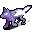
忘却の猟犬- タルタロスをうろつく悪魔の猟犬。その遠吠えは、死に満ちたこの地に棲むほかの住人を呼び寄せる。 - R
 イフリート- 火炎のシミターと強力な炎の魔術を操る炎の精霊。
イフリート- 火炎のシミターと強力な炎の魔術を操る炎の精霊。 - h
 ヘルハウンド- 群れで行動する、炎を吐く犬。
ヘルハウンド- 群れで行動する、炎を吐く犬。 - h
 地獄の豚- 小さな群れで動き回り、ファイアボールを吐く悪魔の豚。
地獄の豚- 小さな群れで動き回り、ファイアボールを吐く悪魔の豚。 - Y
 地獄の象- 地獄から来た巨大な象。炎の息であなたをこんがり焼いてから、踏みつぶしてぐしゃぐしゃにする。
地獄の象- 地獄から来た巨大な象。炎の息であなたをこんがり焼いてから、踏みつぶしてぐしゃぐしゃにする。 - R
 ラクシャーサ- 幻術を得意とする悪魔。大勢の幻の分身にまぎれて身を隠す。
ラクシャーサ- 幻術を得意とする悪魔。大勢の幻の分身にまぎれて身を隠す。 - X
 触手の怪物- ゾットの領域をうろつく、触手の生えた巨大な化け物。接近戦を許すと、あっという間に締め殺されてしまう。
触手の怪物- ゾットの領域をうろつく、触手の生えた巨大な化け物。接近戦を許すと、あっという間に締め殺されてしまう。 - R
 ウェンディゴ- 麻痺させる電撃の矢を放ち、幻像を砕いて氷の破片を撒き散らす強烈な爆発を起こす悪魔。
ウェンディゴ- 麻痺させる電撃の矢を放ち、幻像を砕いて氷の破片を撒き散らす強烈な爆発を起こす悪魔。

ユニークの悪魔
大悪魔と呼ぶほどの力はないが、特に取り上げておくべき強さを持つ者たち。
- R
 アズラエル- ありふれた炎だけでなく、天罰まで投げつけるようになったイフリート。炎の手下を引き連れている。
アズラエル- ありふれた炎だけでなく、天罰まで投げつけるようになったイフリート。炎の手下を引き連れている。 - 5
 グラインダー- 迷宮の危険なほど浅い階に現れる、悪名高い影のインプ。
グラインダー- 迷宮の危険なほど浅い階に現れる、悪名高い影のインプ。 - 1
 イグナシオ- 普通よりさらに凶悪な処刑の悪魔。手にした処刑人の斧によるところも大きい。
イグナシオ- 普通よりさらに凶悪な処刑の悪魔。手にした処刑人の斧によるところも大きい。 - R
 マーラ- 幻術の達人で、敵を自分自身の分身と戦わせる。本人の魔法も侮れない。
マーラ- 幻術の達人で、敵を自分自身の分身と戦わせる。本人の魔法も侮れない。 - Y
 ネリー- ダンジョンスプリントにだけ登場する、やけに屈強な地獄の象。
ネリー- ダンジョンスプリントにだけ登場する、やけに屈強な地獄の象。 - D
.png)
.png)
.png)
.png) 地獄のサーペント - 棲んでいる地獄に合わせて姿と能力が変わる、三つ首の悪魔のドラゴン。
地獄のサーペント - 棲んでいる地獄に合わせて姿と能力が変わる、三つ首の悪魔のドラゴン。
削除された悪魔
- 2
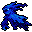
ロロキプロカ- 常に透明で、強力な反魔法攻撃を持つ2級悪魔。0.32で削除された。反魔法攻撃は地獄の獣に移され、地獄の獣は罪の獣になった。 - 4
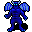
青の悪魔- 冷気と毒に耐性があるが火に弱い、空を飛ぶ悪魔だった。呪文は持たないものの、数マス離れた所から標的めがけて急降下できた。0.18で削除され、急降下攻撃はヘルウィングに受け継がれた。 - 4
 鉄の悪魔- 鉄インプを強化したような悪魔で、ACが高く、さまざまな耐性を持っていた。0.16で錆の悪魔に置き換えられた。
鉄の悪魔- 鉄インプを強化したような悪魔で、ACが高く、さまざまな耐性を持っていた。0.16で錆の悪魔に置き換えられた。 - 4
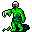
腐れの悪魔- のろのろ歩く悪魔。悪臭を放つ手で触れて腐敗させ、通った後には瘴気の雲を残していった。0.14で削除された。 - 5
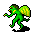
ミッジ- 空を飛ぶ小さなインプで、せいぜいちょっと鬱陶しい程度の相手だった。0.11で削除された。 - 4
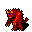
毛むくじゃらの悪魔- 退屈で弱い、近接戦闘しかしない悪魔。0.11で削除された。 - 1
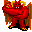
奈落の魔神- 地獄の業火と拷問の両方を唱えた、翼のある巨大な悪魔。0.11で削除され、代わりに地獄の番人が登場した。